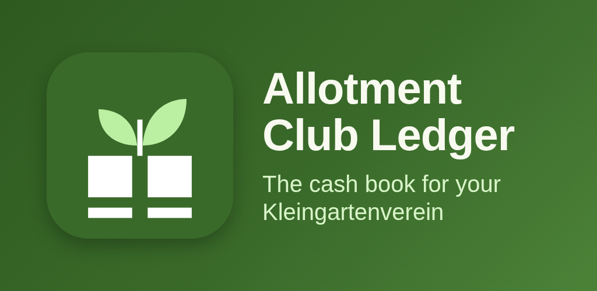
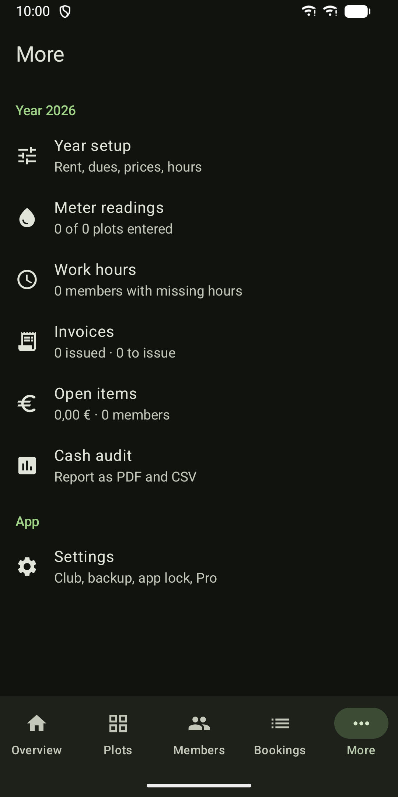
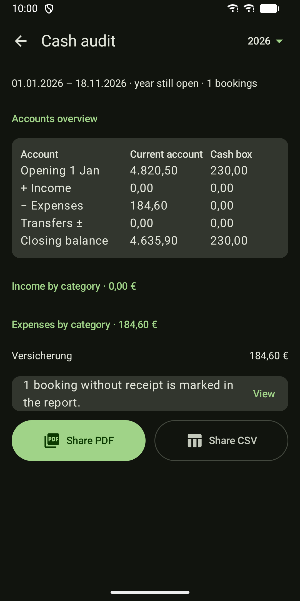

Caja del Club de Huertos
Rentas, cuotas, contadores y recibos para tesoreros de clubes de huertos





Acerca de la app
El libro de caja de un club de huertos de ocio alemán (Kleingartenverein), en tu móvil. Sin cuenta y sin hojas de cálculo. Caja del Club de Huertos está pensada para el tesorero (Kassenwart) que lleva la renta de las parcelas, las cuotas y las derramas en Excel o en papel. La app calcula la liquidación anual, genera las facturas y prepara lo que necesita la revisión de cuentas (Kassenprüfung). PARCELAS Y SOCIOS - Parcelas con su superficie en metros cuadrados e historial de arrendatarios. - Cambio de arrendatario a mitad de año: todos los cargos se reparten por meses. - Socios con o sin parcela, con datos de contacto y saldo. LIQUIDACIÓN ANUAL - Renta por metro cuadrado o fija por parcela, cuota de socio y derramas. - Agua y electricidad según la lectura del contador, con tarifa base opcional. Entrada rápida parcela por parcela, con aviso si una lectura parece incorrecta. - Horas de trabajo comunitario: horas obligatorias, horas realizadas e importe por cada hora que falte. - Factura en PDF con IBAN y concepto de pago, para compartir por correo o mensajería. APUNTES Y RECIBOS - Cuenta bancaria y caja en efectivo, cada una con su saldo, y traspasos entre ambas. - Ingresos y gastos por categoría. Los pagos se asignan automáticamente a los cargos pendientes, también los pagos parciales. - Fotografía un recibo o adjunta un archivo. La app avisa de los apuntes sin recibo. - Partidas pendientes: quién no ha pagado o solo ha pagado una parte. REVISIÓN DE CUENTAS - Informe en PDF y CSV: saldo inicial, ingresos y gastos por categoría, saldo final de cada cuenta y todos los apuntes con su referencia al recibo. - Cierra el ejercicio para que después no cambie nada. Si hace falta corregir algo, se puede reabrir. PRIVACIDAD Y SEGURIDAD - La app no tiene permiso de internet. Tus datos no se envían a ninguna parte. - La base de datos y los recibos están cifrados en el dispositivo. - Bloqueo de la app con huella dactilar o PIN del dispositivo. Desde Android 13, la vista previa de aplicaciones recientes queda en blanco. - Copia de seguridad cifrada con contraseña en un archivo que tú eliges. Restauración desde el mismo archivo. WIDGET - Importe pendiente, número de socios con deuda y saldos de las cuentas en la pantalla de inicio. Los importes se pueden ocultar. LÍMITE DE PARCELAS Y PRO - Todas las funciones están disponibles para clubes con hasta 15 parcelas. - Añadir más de 15 parcelas requiere Pro, una compra opcional única dentro de la app a través de Google Play. Todo lo demás está incluido sin Pro. El tema claro y oscuro sigue el ajuste del sistema. Botones grandes y compatibilidad con TalkBack. La app está disponible en alemán e inglés. Las facturas y los informes siempre se generan en alemán.